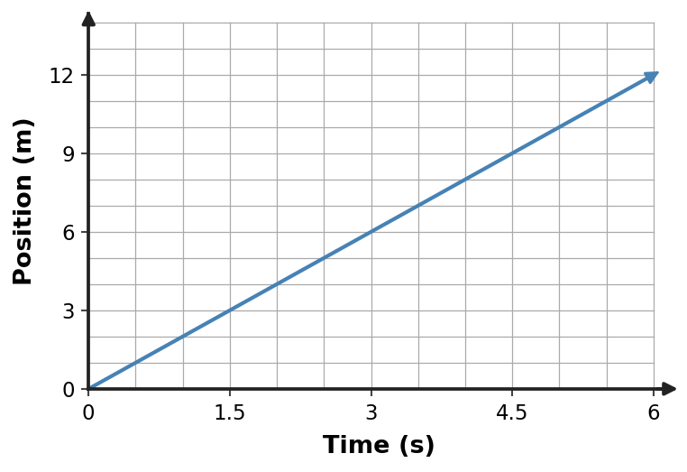

Section 2.5 — Check Your Understanding
1. Which velocity vector correctly represents motion left at 7 m/s if the reference arrow for 7 m/s has the stated scale?
- an arrow pointing opposite left with the correct length
- an arrow pointing left with zero length
- a dot with no direction
- an arrow pointing left with the correct scaled length
2. Construct a velocity vector for an object moving up at 8 m/s. Use arrow direction for motion direction and arrow length to represent speed.
3. Vector A is 4 cm long and points east. Vector B is 4 cm long and points north. Determine whether the object’s velocity changed and explain what feature of the vectors supports your answer.
- Yes only if the arrow lengths also change.
- Yes. The speed magnitude can be the same, but the direction changes from east to north, so velocity changes.
- No; equal arrow lengths guarantee equal velocity.
- No; direction is not part of velocity.
4. Vector A is 4 cm long and points east. Vector B is 4 cm long and points north. Determine whether the object’s velocity changed and explain what feature of the vectors supports your answer.
5. A position–time graph is shown. Write a motion description consistent with the graph, then identify one common incorrect interpretation and correct it.
- The object is climbing a physical hill because the line rises.
- The object is accelerating because position increases.
- The object is at rest because the line is straight.
- The object moves in the positive direction at constant velocity 2 m/s. The graph height represents position, not physical height above the ground.

6. A position–time graph is shown. Write a motion description consistent with the graph, then identify one common incorrect interpretation and correct it.